MS in Applied Data Science • Syracuse University, iSchool
Applied Data Science Portfolio • May 2026
I’m a graduate student in Syracuse University’s MS in Applied Data Science program at the iSchool. My work spans Python and SQL, dbt transformation modeling, NoSQL storage, and machine learning classification. I’m pursuing data engineering or analytics engineering roles where I can build reliable pipelines, clean data models, and reporting layers that support real decision‑making across teams and evolving business needs.
My graduate work emphasized end‑to‑end data engineering, analytical modeling, and scalable storage design. I focused on building pipelines, dimensional models, and machine learning workflows that support real‑world reporting and operational needs across diverse data environments.
I built a data pipeline that merged EPA fuel‑economy data with NHTSA recall complaint summaries to explore how consumer sentiment relates to vehicle characteristics. The workflow required pulling two public datasets that used inconsistent naming conventions, so I wrote Python scripts to query the NHTSA and VPIC APIs, corrected model‑name mismatches, and created a composite key that allowed sentiment scores to join cleanly with vehicle specs. After applying VADER to each complaint summary, I aggregated results by brand, model, and year to evaluate patterns across the combined dataset. The analysis showed almost no relationship between sentiment and MPG, but lower‑efficiency vehicles generated more complaints overall. The project strengthened my ability to engineer pipelines around messy external data sources and reinforced how much applied analytics depends on reliable normalization rather than the modeling step itself.
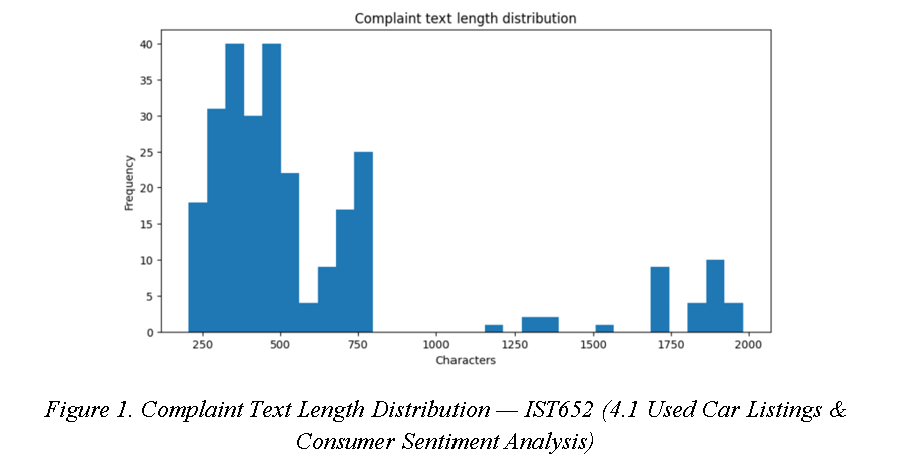
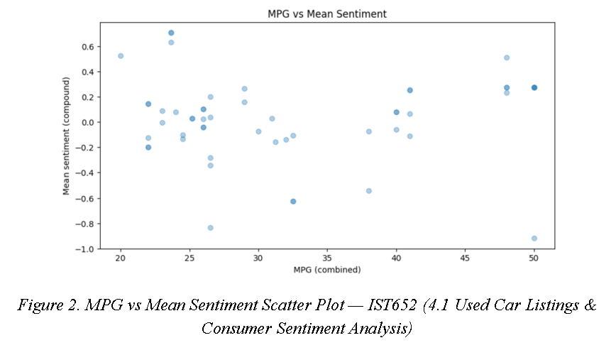
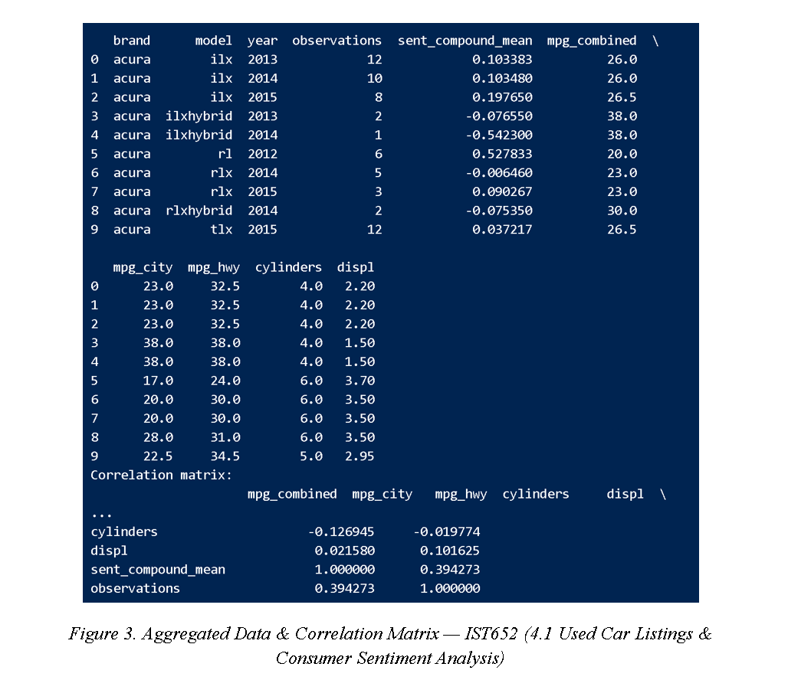
I worked on a text‑classification pipeline that analyzed student explanations of math problems and assigned them to one of 35 misconception categories. I built the preprocessing and TF‑IDF vectorization steps, then trained a hybrid ensemble using Logistic Regression and Linear SVM to handle the wide variation in writing styles and class imbalance across categories. Alongside the supervised model, I implemented an LDA workflow to uncover latent themes without relying on labels, comparing how well the discovered clusters aligned with known misconception patterns. The supervised model performed strongly on well‑represented categories, while LDA revealed interpretable reasoning patterns that accuracy alone didn’t capture. This project sharpened my understanding of evaluating NLP models in contexts where interpretability matters as much as predictive performance.
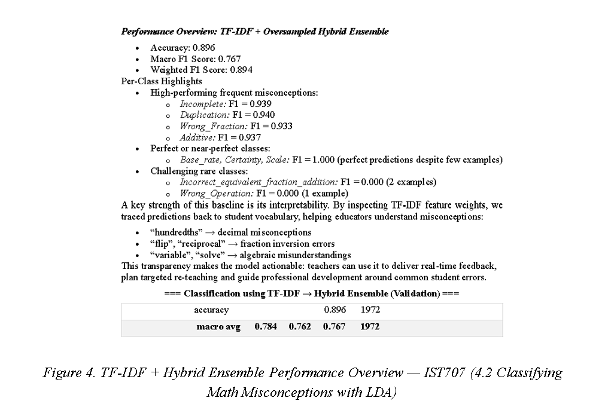
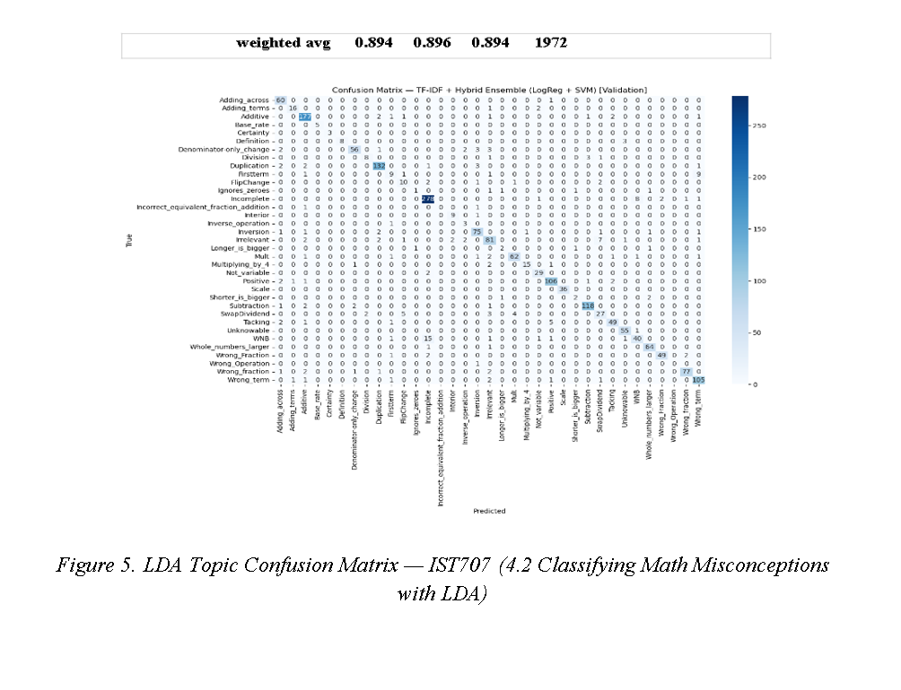
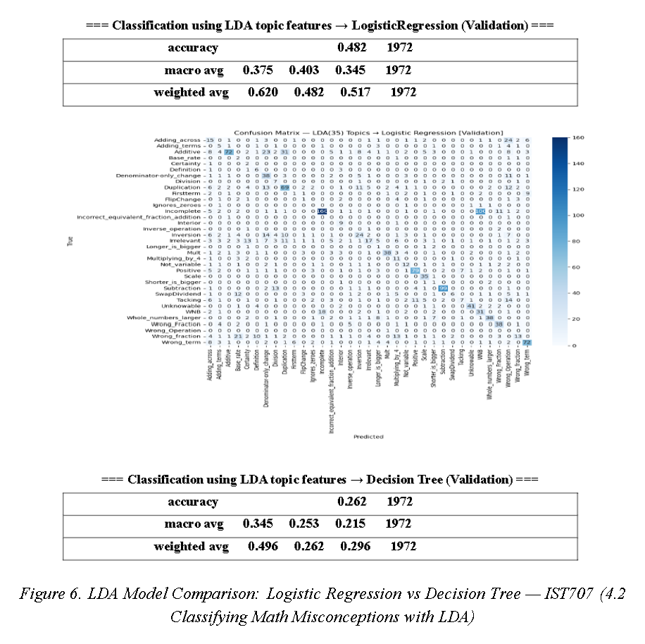
As the data engineer on a team building a Snowflake warehouse for a merged retail‑and‑streaming company, I designed dbt models that unified two different schemas into a single dimensional structure. The challenge was treating streaming subscriptions as products so they could coexist with retail orders in the same fact table. I built the transformation logic, validated dimensional tables, and ensured consistent keys across both systems. The final warehouse powered a Power BI dashboard showing unified sales and subscription trends. This project strengthened my understanding of schema design, ELT pipelines, and the importance of building transformations that downstream analysts can trust across diverse reporting needs and business workflows.
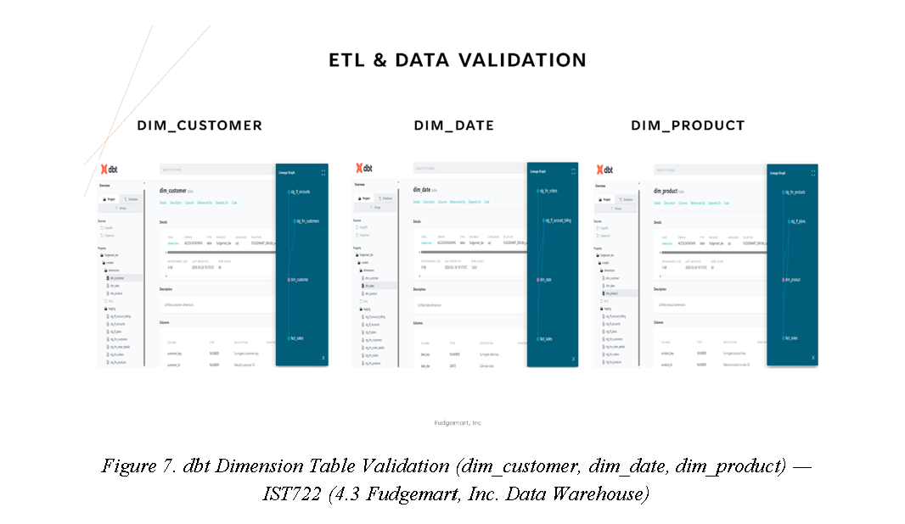
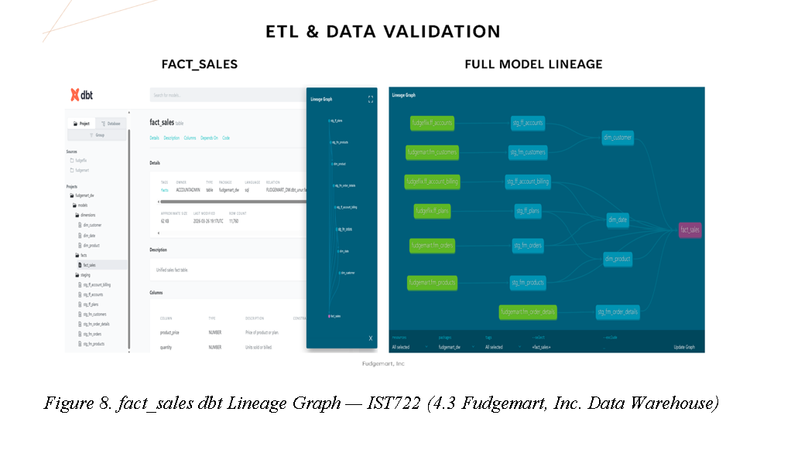
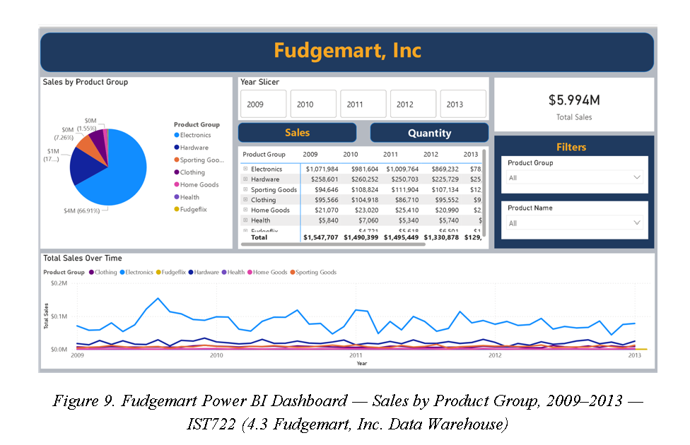
I engineered a large‑scale data pipeline that ingested NYC subway GTFS data and historical MTA delay reports into MongoDB, then configured Elasticsearch to support geospatial search on subway stop locations. The stop_times table contained over 7.4 million rows, which required moving outside Jupyter and using mongoimport inside Docker to load efficiently. MongoDB handled structured document storage while Elasticsearch powered fast geospatial queries, each serving different access patterns within the same pipeline. This project strengthened my ability to work with scale constraints, containerized environments, and multi‑system storage design.
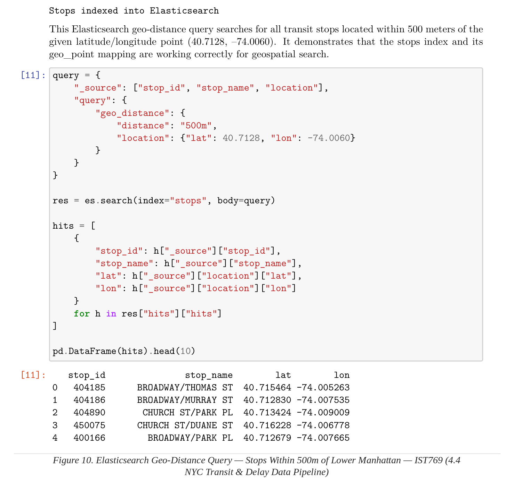
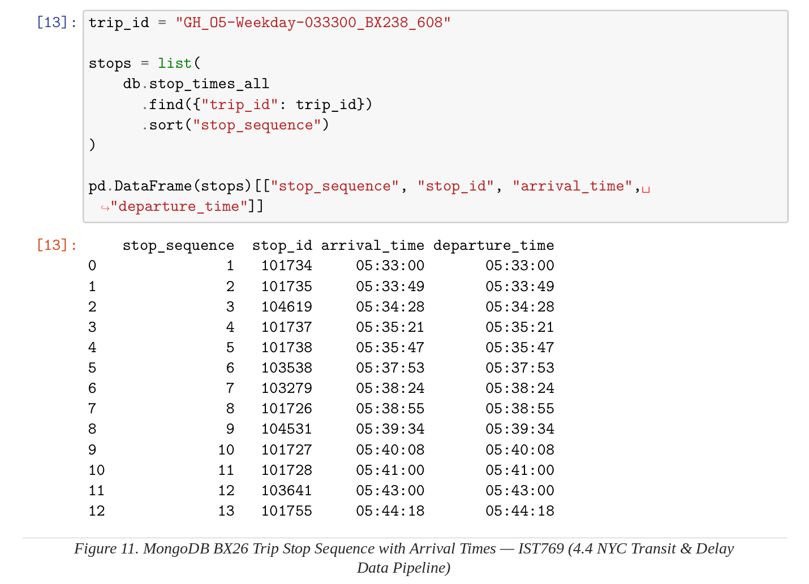
“When I started this program, I thought the hard part would be learning the tools. It turned out the tools were the easy part. The real challenge was learning to ask better questions — the kind that lead to meaningful insights, stronger models, and clearer decisions across every project I take on.”
© 2026 Unur Gantulga — Applied Data Science Portfolio